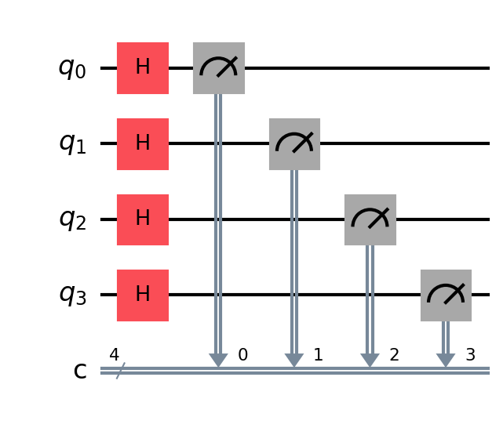
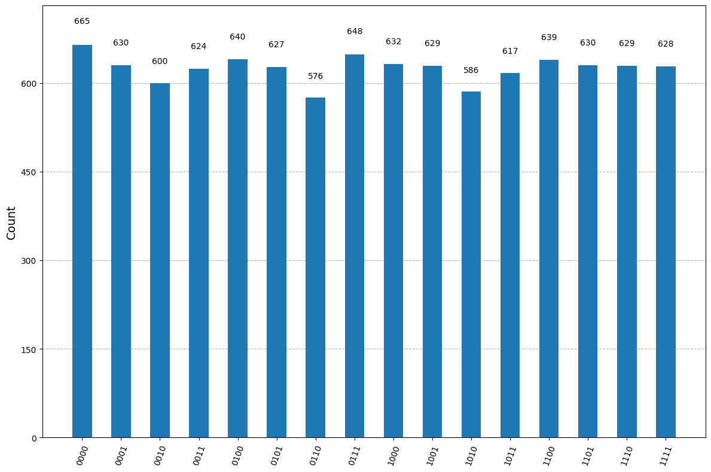
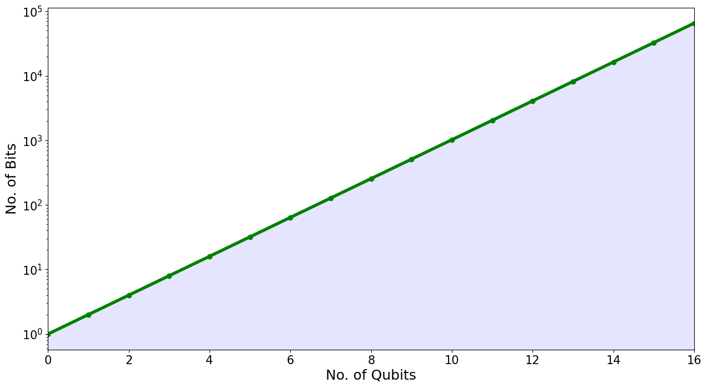
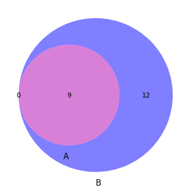
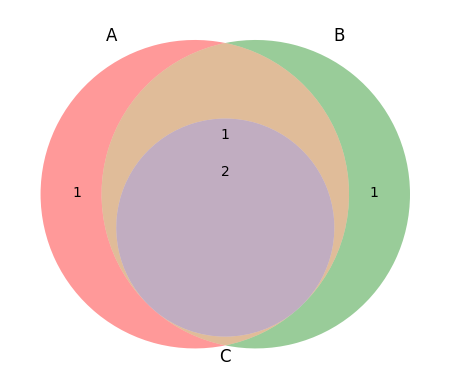

import qiskit
size = 4
qc = qiskit.QuantumCircuit(size, size)
for i in range(size):
qc.h(i)
#
for i in range(size):
qc.measure(i, i)
qc.draw(output='mpl', scale=1.5)

from qiskit_aer import Aer
from qiskit.visualization import plot_histogram
sim = Aer.get_backend('aer_simulator')
job = sim.run(qc, shots=10000)
result = job.result()
counts = result.get_counts()
plot_histogram(counts, figsize=(12,8))

counts
{'1011': 617,
'1101': 630,
'1110': 629,
'1100': 639,
'1111': 628,
'0001': 630,
'1001': 629,
'0101': 627,
'1010': 586,
'1000': 632,
'0110': 576,
'0010': 600,
'0000': 665,
'0011': 624,
'0111': 648,
'0100': 640}
svs = np.array([[1, 0], [np.log2(50), 0], [np.log2(50), 10**6], [1, 10**6], [1, 0]]).T
tns = np.array([[np.log2(25), 0], [np.log2(65536), 0], [np.log2(65536), 100], [np.log2(25), 100], [np.log2(25), 0]]).T
import matplotlib.pyplot as plt
plt.figure(figsize=(15,8))
plt.xlim(2, 16)
plt.ylim(1, 10**6)
plt.yscale('log')
plt.fill(svs[0], svs[1], fc='green', alpha=0.5)
plt.fill(tns[0], tns[1], fc='blue', alpha=0.5)
loc = [i for i in range(1, 17)]
lab = [2**i for i in range(1, 17)]
plt.xticks(loc, lab, fontsize=15)
plt.yticks(fontsize=15)
plt.text(7, 8, "Tensor-Network Simulators", fontsize=24)
plt.text(3, 8, "State-Vector Simulators", fontsize=24, rotation=90)
plt.show()
---------------------------------------------------------------------------
NameError Traceback (most recent call last)
Cell In[4], line 1
----> 1 svs = np.array([[1, 0], [np.log2(50), 0], [np.log2(50), 10**6], [1, 10**6], [1, 0]]).T
2 tns = np.array([[np.log2(25), 0], [np.log2(65536), 0], [np.log2(65536), 100], [np.log2(25), 100], [np.log2(25), 0]]).T
4 import matplotlib.pyplot as plt
NameError: name 'np' is not defined
x = np.arange(0, 17)
y = np.power(2, x)
import matplotlib.pyplot as plt
plt.figure(figsize=(15,8))
plt.xlim(0, 16)
#plt.ylim(1, 10**6)
plt.yscale('log')
plt.plot(x, y, 'o-', color='green', lw=4)
plt.fill_between(x, y, np.zeros(x.shape[0]), fc='blue', alpha=0.1)
plt.xticks(fontsize=15)
plt.yticks(fontsize=15)
plt.xlabel("No. of Qubits", fontsize=18)
plt.ylabel("No. of Bits", fontsize=18)
plt.show()

plt.fill_between?
Signature:
plt.fill_between(
x: 'ArrayLike',
y1: 'ArrayLike | float',
y2: 'ArrayLike | float' = 0,
where: 'Sequence[bool] | None' = None,
interpolate: 'bool' = False,
step: "Literal['pre', 'post', 'mid'] | None" = None,
*,
data=None,
**kwargs,
) -> 'PolyCollection'
Docstring:
Fill the area between two horizontal curves.
The curves are defined by the points (*x*, *y1*) and (*x*,
*y2*). This creates one or multiple polygons describing the filled
area.
You may exclude some horizontal sections from filling using *where*.
By default, the edges connect the given points directly. Use *step*
if the filling should be a step function, i.e. constant in between
*x*.
Parameters
----------
x : array (length N)
The x coordinates of the nodes defining the curves.
y1 : array (length N) or scalar
The y coordinates of the nodes defining the first curve.
y2 : array (length N) or scalar, default: 0
The y coordinates of the nodes defining the second curve.
where : array of bool (length N), optional
Define *where* to exclude some horizontal regions from being filled.
The filled regions are defined by the coordinates ``x[where]``.
More precisely, fill between ``x[i]`` and ``x[i+1]`` if
``where[i] and where[i+1]``. Note that this definition implies
that an isolated *True* value between two *False* values in *where*
will not result in filling. Both sides of the *True* position
remain unfilled due to the adjacent *False* values.
interpolate : bool, default: False
This option is only relevant if *where* is used and the two curves
are crossing each other.
Semantically, *where* is often used for *y1* > *y2* or
similar. By default, the nodes of the polygon defining the filled
region will only be placed at the positions in the *x* array.
Such a polygon cannot describe the above semantics close to the
intersection. The x-sections containing the intersection are
simply clipped.
Setting *interpolate* to *True* will calculate the actual
intersection point and extend the filled region up to this point.
step : {'pre', 'post', 'mid'}, optional
Define *step* if the filling should be a step function,
i.e. constant in between *x*. The value determines where the
step will occur:
- 'pre': The y value is continued constantly to the left from
every *x* position, i.e. the interval ``(x[i-1], x[i]]`` has the
value ``y[i]``.
- 'post': The y value is continued constantly to the right from
every *x* position, i.e. the interval ``[x[i], x[i+1])`` has the
value ``y[i]``.
- 'mid': Steps occur half-way between the *x* positions.
Returns
-------
`.PolyCollection`
A `.PolyCollection` containing the plotted polygons.
Other Parameters
----------------
data : indexable object, optional
If given, the following parameters also accept a string ``s``, which is
interpreted as ``data[s]`` (unless this raises an exception):
*x*, *y1*, *y2*, *where*
**kwargs
All other keyword arguments are passed on to `.PolyCollection`.
They control the `.Polygon` properties:
Properties:
agg_filter: a filter function, which takes a (m, n, 3) float array and a dpi value, and returns a (m, n, 3) array and two offsets from the bottom left corner of the image
alpha: array-like or scalar or None
animated: bool
antialiased or aa or antialiaseds: bool or list of bools
array: array-like or None
capstyle: `.CapStyle` or {'butt', 'projecting', 'round'}
clim: (vmin: float, vmax: float)
clip_box: `~matplotlib.transforms.BboxBase` or None
clip_on: bool
clip_path: Patch or (Path, Transform) or None
cmap: `.Colormap` or str or None
color: color or list of RGBA tuples
edgecolor or ec or edgecolors: color or list of colors or 'face'
facecolor or facecolors or fc: color or list of colors
figure: `~matplotlib.figure.Figure`
gid: str
hatch: {'/', '\\', '|', '-', '+', 'x', 'o', 'O', '.', '*'}
in_layout: bool
joinstyle: `.JoinStyle` or {'miter', 'round', 'bevel'}
label: object
linestyle or dashes or linestyles or ls: str or tuple or list thereof
linewidth or linewidths or lw: float or list of floats
mouseover: bool
norm: `.Normalize` or str or None
offset_transform or transOffset: `.Transform`
offsets: (N, 2) or (2,) array-like
path_effects: list of `.AbstractPathEffect`
paths: list of array-like
picker: None or bool or float or callable
pickradius: float
rasterized: bool
sizes: `numpy.ndarray` or None
sketch_params: (scale: float, length: float, randomness: float)
snap: bool or None
transform: `~matplotlib.transforms.Transform`
url: str
urls: list of str or None
verts: list of array-like
verts_and_codes: unknown
visible: bool
zorder: float
See Also
--------
fill_between : Fill between two sets of y-values.
fill_betweenx : Fill between two sets of x-values.
File: ~/miniforge/envs/jb/lib/python3.12/site-packages/matplotlib/pyplot.py
Type: function
# Library
from matplotlib import pyplot as plt
from matplotlib_venn import venn2, venn3
# Basic Venn
v = venn2(subsets={'10': 0, '01': 12, '11': 9},
set_labels=("A", "B"),
set_colors=('r', 'b'),
alpha = 0.5)
# Change Backgroud
plt.gca().set_facecolor('white')
#plt.gca().set_axis_on()
# Show it
plt.show()

venn2?
Signature:
venn2(
subsets,
set_labels=('A', 'B'),
set_colors=('r', 'g'),
alpha=0.4,
normalize_to=1.0,
ax=None,
subset_label_formatter=None,
)
Docstring:
Plots a 2-set area-weighted Venn diagram.
The subsets parameter can be one of the following:
- A list (or a tuple) containing two set objects.
- A dict, providing sizes of three diagram regions.
The regions are identified via two-letter binary codes ('10', '01', and '11'), hence a valid set could look like:
{'10': 10, '01': 20, '11': 40}. Unmentioned codes are considered to map to 0.
- A list (or a tuple) with three numbers, denoting the sizes of the regions in the following order:
(10, 01, 11)
``set_labels`` parameter is a list of two strings - set labels. Set it to None to disable set labels.
The ``set_colors`` parameter should be a list of two elements, specifying the "base colors" of the two circles.
The color of circle intersection will be computed based on those.
The ``normalize_to`` parameter specifies the total (on-axes) area of the circles to be drawn. Sometimes tuning it (together
with the overall fiture size) may be useful to fit the text labels better.
The return value is a ``VennDiagram`` object, that keeps references to the ``Text`` and ``Patch`` objects used on the plot
and lets you know the centers and radii of the circles, if you need it.
The ``ax`` parameter specifies the axes on which the plot will be drawn (None means current axes).
The ``subset_label_formatter`` parameter is a function that can be passed to format the labels
that describe the size of each subset.
>>> from matplotlib_venn import *
>>> v = venn2(subsets={'10': 1, '01': 1, '11': 1}, set_labels = ('A', 'B'))
>>> c = venn2_circles(subsets=(1, 1, 1), linestyle='dashed')
>>> v.get_patch_by_id('10').set_alpha(1.0)
>>> v.get_patch_by_id('10').set_color('white')
>>> v.get_label_by_id('10').set_text('Unknown')
>>> v.get_label_by_id('A').set_text('Set A')
You can provide sets themselves rather than subset sizes:
>>> v = venn2(subsets=[set([1,2]), set([2,3,4,5])], set_labels = ('A', 'B'))
>>> c = venn2_circles(subsets=[set([1,2]), set([2,3,4,5])], linestyle='dashed')
>>> print("%0.2f" % (v.get_circle_radius(1)/v.get_circle_radius(0)))
1.41
File: ~/miniforge/envs/jb/lib/python3.12/site-packages/matplotlib_venn/_venn2.py
Type: function
v = venn3(subsets=(1, 1, 1, 0, 0, 0, 2), set_labels = ('A', 'B', 'C'))
plt.show()

import matplotlib.pyplot as plt
x = np.array([0, 3, 4, 4.5, 5, 7, 7.7, 8, 8.2, 10])
y = 0.5 * x
plt.figure(figsize=(12,3))
plt.plot(x, y, 'o-')
plt.axline((x[0], y[0]), (x[1], y[1]))
<matplotlib.lines.AxLine at 0x1207b3770>
import matplotlib.pyplot as plt
fig, ax = plt.subplots(figsize=(12, 8))
c1 = plt.Circle((-1.2, 1), 1, color='g', alpha=0.5, ec='k')
c2 = plt.Circle((1.2, 1), 1, color='g', alpha=0.5, ec='k')
ax.text(c1.center[0], c1.center[1], 'A', fontsize=72, ha='center', va='center')
ax.text( c2.center[0], c2.center[1], 'B', fontsize=72, ha='center', va='center')
ax.add_patch(c1)
ax.add_patch(c2)
c3 = plt.Circle((-0.5, -1), 1, color='g', alpha=0.5, ec='k')
c4 = plt.Circle(( 0.5, -1), 1, color='g', alpha=0.5, ec='k')
ax.add_patch(c3)
ax.add_patch(c4)
ax.set_xlim(-3, 3)
ax.set_ylim(-2.2, 2.2)
ax.set_xticks([])
ax.set_yticks([])
plt.legend()
plt.show()
No artists with labels found to put in legend. Note that artists whose label start with an underscore are ignored when legend() is called with no argument.
import numpy as np
import matplotlib.pyplot as plt
def f(n: int):
return (-1)**(n) * (1/(2*n + 1))
summ = 0
xi = []
for i in range(120):
fi = f(i)
summ += 4 * fi
#t = (fi, 0) if fi > 0 else (0, fi)
xi += [fi]
xi = np.array(xi)
print(summ, xi.shape)
plt.plot(xi, '-o')
3.13325946491983 (120,)
[<matplotlib.lines.Line2D at 0x116822fc0>]
xi[0]
array([1. , 0. , 0.2 , 0. , 0.11111111,
0. , 0.07692308, 0. , 0.05882353, 0. ,
0.04761905, 0. , 0.04 , 0. , 0.03448276,
0. , 0.03030303, 0. , 0.02702703, 0. ,
0.02439024, 0. , 0.02222222, 0. , 0.02040816,
0. , 0.01886792, 0. , 0.01754386, 0. ,
0.01639344, 0. , 0.01538462, 0. , 0.01449275,
0. , 0.01369863, 0. , 0.01298701, 0. ,
0.01234568, 0. , 0.01176471, 0. , 0.01123596,
0. , 0.01075269, 0. , 0.01030928, 0. ,
0.00990099, 0. , 0.00952381, 0. , 0.00917431,
0. , 0.00884956, 0. , 0.00854701, 0. ,
0.00826446, 0. , 0.008 , 0. , 0.00775194,
0. , 0.0075188 , 0. , 0.00729927, 0. ,
0.0070922 , 0. , 0.00689655, 0. , 0.00671141,
0. , 0.00653595, 0. , 0.00636943, 0. ,
0.00621118, 0. , 0.00606061, 0. , 0.00591716,
0. , 0.00578035, 0. , 0.00564972, 0. ,
0.00552486, 0. , 0.00540541, 0. , 0.00529101,
0. , 0.00518135, 0. , 0.00507614, 0. ,
0.00497512, 0. , 0.00487805, 0. , 0.00478469,
0. , 0.00469484, 0. , 0.00460829, 0. ,
0.00452489, 0. , 0.00444444, 0. , 0.00436681,
0. , 0.00429185, 0. , 0.00421941, 0. ])